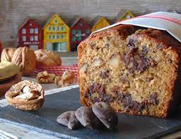

Receta de la semana: "Budin de Banana con chips de chocoate"

-
Precalentar el horno a 175 grados
-
Pelar y cortar 2 bananas maduras
-
Agregar un tercio de taza de aceite de girasol, esencia de vainilla, 1 huevo y 125grs de azucar
-
Tamizar 200grs de harina y una cucharadita de bicarbonato
-
Agregar nueces y chispas de chocolate
-
Hornear aprox 50 minutos
Ver el video de la receta